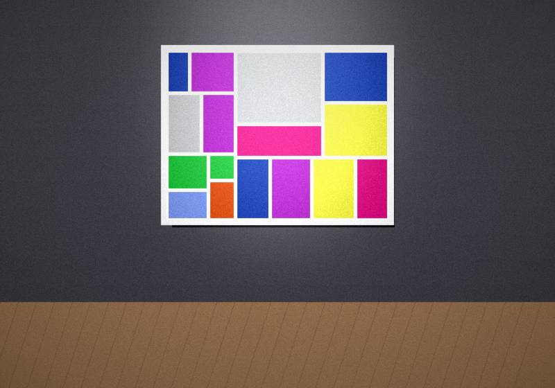
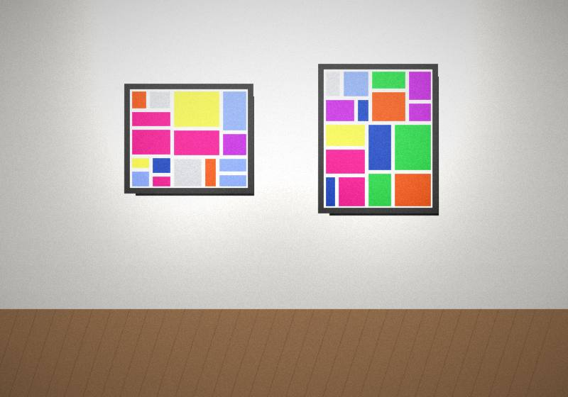

Sample imageWinter Light
January 15 to March 5, 2027. Photography of the Finger Lakes in the cold months.
Try “clay”, “kids”, “open house” or “hours”.
Gallery shows by artists from Bath, Western Steuben County and the Finger Lakes, plus openings, open studios and community days.

Sample imageNovember 13, 2026 to January 9, 2027
A juried show of painting, clay, fiber and photography by regional artists.

Sample imageJanuary 15 to March 5, 2027. Photography of the Finger Lakes in the cold months.
A running spotlight on artists with roots in Bath, starting with Haverling alumni. Send us a short biography of your adventures in the arts.
Send your biographySample exhibitions and events. Titles and dates are placeholders.